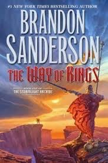

|
|  |
The Way of Kings
|
Brandon Sanderson
|
 |
Science Fiction & Fantasy
|
Farrar Strauss and Young
|
Widely acclaimed for his work completing Robert Jordan’s Wheel of Time saga, Brandon Sanderson now begins a grand cycle of his own, one every bit as ambitious and immersive.
Roshar is a world of stone and storms. Uncanny tempests of incredible power sweep across the rocky terrain so frequently that they have shaped ecology and civilization alike. Animals hide in shells, trees pull in branches, and grass retracts into the soilless ground. Cities are built only where the topography offers shelter.
It has been centuries since the fall of the ten consecrated orders known as the Knights Radiant, but their Shardblades and Shardplate remain: mystical swords and suits of armor that transform ordinary men into near-invincible warriors. Men trade kingdoms for Shardblades. Wars were fought for them, and won by them.
One such war rages on a ruined landscape called the Shattered Plains. There, Kaladin, who traded his medical apprenticeship for a spear to protect his little brother, has been reduced to slavery. In a war that makes no sense, where ten armies fight separately against a single foe, he struggles to save his men and to fathom the leaders who consider them expendable.
Brightlord Dalinar Kholin commands one of those other armies. Like his brother, the late king, he is fascinated by an ancient text called "The Way of Kings". Troubled by over-powering visions of ancient times and the Knights Radiant, he has begun to doubt his own sanity.
Across the ocean, an untried young woman named Shallan seeks to train under an eminent scholar and notorious heretic, Dalinar’s niece, Jasnah. Though she genuinely loves learning, Shallan’s motives are less than pure. As she plans a daring theft, her research for Jasnah hints at secrets of the Knights Radiant and the true cause of the war.
The result of over ten years of planning, writing, and world-building, "The Way of Kings" is but the opening movement of the Stormlight Archive, a bold masterpiece in the making.
Speak again the ancient oaths,
Life before death.
Strength before weakness.
Journey before Destination.
and return to men the Shards they once bore.
The Knights Radiant must stand again.
|
|
|
|